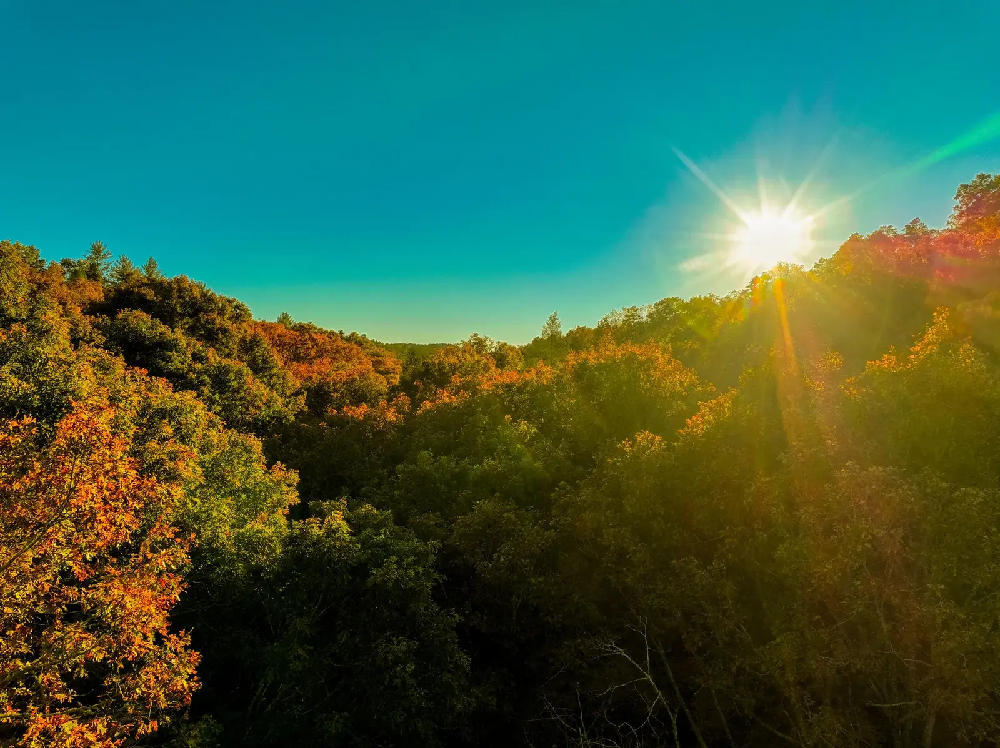

Local guide
Dahlonega and the North Georgia mountains
The spots we actually send our guests to. Not everything in town, just the places worth your time.
Hours change by season, so call ahead before you go.

Wine country
15 wineries. 20 minutes. Start here.
Dahlonega sits at the heart of Georgia's wine country. These are the three we send every guest to, and two more for the ones who want to keep going.
-
Wolf Mountain Vineyards
About 15 min
The crown jewel. Award-winning wines, hilltop views, and a Sunday brunch that books up fast. If you can only do one winery, this is it.
Mick's pick Call ahead for brunch. It fills up.
-
Montaluce Winery & Restaurant
About 20 min
Best food in wine country. Floor-to-ceiling windows over the vineyard. Made for a long lunch with wine.
Mick's pick The restaurant is the real draw.
-
Kaya Vineyard & Winery
About 12 min
270-degree mountain views from a hilltop, the most dramatic vista of any winery in the area. Get there an hour before sunset with a glass in hand.
Mick's pick The best free sunset show in North Georgia.
-
Doghobble Wine Farm
About 5 min
A working farm with wine. Dogs, chickens, alpacas. The most authentic, unpretentious winery in the area, and great food too.
Mick's pick For guests who want real, not polished.
-
Cavender Creek Vineyards
About 5 min
Family-owned, laid-back, estate-grown wines. Right around the corner from Doghobble.
Mick's pick Pair it with Doghobble for a slow afternoon close to the treehouse.

Hiking and waterfalls
Waterfalls, summits and the Appalachian Trail
Some of the most dramatic hiking in the Southeast, all within 45 minutes. From easy waterfall walks to above-the-clouds sunrise hikes.
-
Amicalola Falls
About 45 min
The tallest cascading waterfall in Georgia, 729 feet, with several viewing platforms. The East Ridge Loop gives you the best of it.
Mick's pick The waterfall to see. Stop at B.J. Reece Orchards on the way back for cider and doughnuts.
-
Preacher's Rock from Woody Gap
About 25 min
A short climb with a massive reward: one of the best views in North Georgia, 2 miles round trip on the Appalachian Trail. It faces southeast, so at sunrise you're above the clouds.
Mick's pick Leave the treehouse by 6:30 AM. The best effort-to-reward ratio in the area.
-
Raven Cliff Falls
About 35 min
4.9 miles round trip to a stunning waterfall. Stream crossings, beautiful forest, real hiking.
Mick's pick For guests who actually want to hike. Stop in Helen after for the mountain coaster.
-
Lake Zwerner
About 7 min
An easy, scenic loop around the reservoir. Flat, beautiful, accessible.
Mick's pick Coffee at Jethro's first, then the loop. The perfect easy morning.

Downtown Dahlonega
Gold rush history and small-town character
America's first gold rush started here in 1828. The square still has its courthouse with the gold-leaf steeple, surrounded by local shops, restaurants and places that have nothing to do with a chain.
-
Spirits Tavern
Elevated American fare on the square. Good cocktails, a solid menu. Our default dinner recommendation.
Mick's pick Call ahead on weekends.
-
Picnic Cafe
The mayor's wife bakes. Small-town, personal, genuine. Great sandwiches and baked goods.
Mick's pick The perfect quick lunch before you explore the square.
-
Foothill Grill
About 10 min
A breakfast legend. The cinnamon rolls are what people talk about.
Mick's pick The cinnamon rolls. Get there early on weekends.
-
Consolidated Gold Mine
About 8 min
200 feet underground, a constant 60 degrees, a 40-minute guided tour through the original tunnels. Gold panning included.
Mick's pick Our number one rainy-day pick. Underground means weatherproof.
-
Jethro's Coffee House
The coffee stop. Good coffee, a cozy room, right on the square.
Mick's pick Coffee at Jethro's before a walk at Lake Zwerner. That's the move.
-
Dahlonega Fudge Factory
Family-owned since 1982. More than 15 kinds of fudge, and the Dahlonega Nuggets: pecans in caramel, dipped in chocolate. An institution.
Mick's pick Everyone stops here. It's part of the trip.
-
Paul Thomas Chocolates
More than 120 handmade recipes, made on site. The elevated chocolate option.
Mick's pick For couples who want something special to bring back to the treehouse.

Day trips
Three mountain towns within an hour
When you want to explore beyond Dahlonega, these three towns extend the adventure.
-
Helen, GA
About 35 min
A Bavarian village in the mountains. The real draw is the Alpine Coaster, gravity-powered with you in control of the speed, and $5 unlimited river tubing in summer.
Mick's pick Do the coaster, walk the village, get ice cream. A full afternoon.
-
Ellijay, GA
About 45 min
Georgia's apple capital. In fall, B.J. Reece Orchards for apple picking and legendary doughnuts, then walk across to Reece's Cider Company for 16 hard ciders on tap.
Mick's pick In fall, this is the day trip.
-
Blue Ridge, GA
About 1 hr
A vintage scenic railway along the Toccoa River. Zip lines and aerial courses at the Adventure Park. A more polished downtown with shops and galleries.
Mick's pick Book the railway ahead. It sells out.
Every season has a story
Seasonal highlights

Spring
Wildflowers blanket the forest floor and mountain laurel blooms along every trail. The Dahlonega Butterfly Farm opens late March. The waterfalls run full, and the forest smells like rain and new growth.

Summer
Fireflies in the forest at dusk: in June and July the canopy lights up from the inside. $5 unlimited tubing in Helen. Long evenings on the deck. The canopy is so thick the only light is green.

Fall
Color at elevation arrives earlier and lasts longer. The canopy turns gold, then crimson, then amber. Apple picking in Ellijay. Gold Rush Days on the square. The most dramatic season, and the most popular. Book early.

Winter
Frost on the rope bridge. The bare canopy shows views the leaves keep secret. The fire pit feels essential. Old Fashioned Christmas turns Dahlonega into the Christmas Town of the Southeast. The silence is deeper, the stars are brighter, and the forest is yours.
Quick reference
If you only have time for one thing
- One winery?
- Wolf Mountain. Call ahead for brunch.
- Two wineries?
- Wolf Mountain and Montaluce. Best food in wine country.
- A slow afternoon?
- Doghobble and Cavender Creek. Both 5 minutes from the treehouse.
- Best hike?
- Amicalola Falls. Stop at B.J. Reece Orchards on the way back.
- Quick hike, big views?
- Preacher's Rock from Woody Gap. 2 miles. Above the clouds.
- Rainy day?
- The Consolidated Gold Mine and the square. Fudge, coffee, wine tasting.
- Nice dinner?
- Spirits Tavern. Call ahead on weekends.
- Best breakfast?
- Foothill Grill. The cinnamon rolls.
- Evening in?
- Pizza on the sky deck. Or a beer board and a projector movie.
- Secret sunrise?
- Preacher's Rock. Leave the treehouse by 6:30 AM.
- Secret sunset?
- Kaya Vineyard. An hour before sunset. Wine in hand.

The mountains are waiting. So is your treehouse.
Coming up from Atlanta? Read about a romantic getaway near Atlanta.